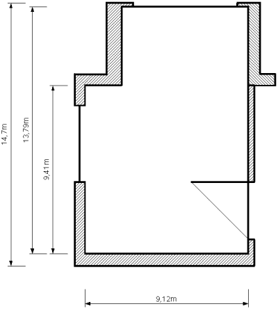
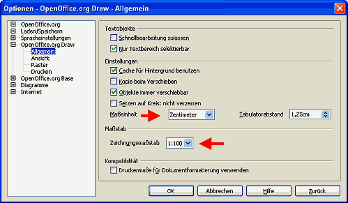

| [zurück] | [Hauptmenü] | [weiter] |
Anfertigen eines Grundriss mit Maßlinien
Abbildung 1: Grundriss mit Maßlinien
Zur Einführung erstellen wir zunächst den Grundriss eines Zimmers. Dazu sollten wir folgende Überlegung anstellen: Wie groß ist das Zimmer im Original und welchen Maßstab muss ich anwenden um die Zeichnung auf meine Arbeitsfläche zu bekommen. Dabei ist die Arbeitfläche standardmäßig ein A4 Blatt abzüglich der Seitenränder.
Die Einstellung der Seite sehen/ändern wir im Menü "Format > Seite..." . Die Blattgröße hängt ja auch nicht zuletzt vom benützten Drucker ab. Wer stolzer Besitzer eines DIN A3 Druckers ist kann natürlich eine A3-Blattgröße verwenden.
Das Zimmer in unserem Beispiel hat ca. 14 x 9 Meter. Damit die Zeichnung auf das Blatt passt und wir die korrekten Maßangaben erhalten stellen wir jetzt unseren Maßstab ein und wählen "1:100" (1 cm der Zeichnung entspricht 100 cm des Zimmers). Die Einstellung hierzu erfolgt im Menü "Extras > Optionen... > OpenOffice.org Draw > Allgemein > Zeichnungsmaßstab".
Abbildung 2: Einstellung des Maßstabs
Dort stellen wir im Pulldown-Menü den gewünschten Maßstab ein, im Menü "Maßeinheit" darüber eventuell noch nach Bedarf "Zentimeter" oder "Meter".
Nun kann es los gehen.
- Zunächst richten wir die Fanglinien ein. Sollte für das Positionieren der Linien die Anzeige der Lineale zu ungenau sein, hilft ein Rechtsklick auf die Fanglinie. Im Kontextmenue "Fanglinie bearbeiten..." können Sie diese genau positionieren. Die Anzeige hat sich sogar bereits an "Zeichnungsmaßstab" und "Maßeinheit" angepasst.
-
Um die Wände zu zeichnen verwenden wir das Werkzeug "Polygon 45°, gefüllt" . Dieses Werkzeug finden wir in der Gruppe "Kurve"
 , wenn wir neben dem Icon auf den Pfeil klicken.
, wenn wir neben dem Icon auf den Pfeil klicken.
- Die gezeichneten Wände füllen wir mit einer Schraffur. Auf der Symbolleiste "Linie und Füllung" wählen wir statt "Farbe" "Schraffur" und in der Dropdownbox rechts daneben die Schraffur "Schwarz 45°"
- Bevor wir nun die Maßlinien zeichnen, wollen wir das Konzept der Ebenen einführen. Standardmäßig bietet Draw 3 Ebenen an (die um weitere, benutzerdefinierte Ebenen erweitert werden können) "Layout, Controls und Maßlinien" die als Register am unteren Ende der Arbeitsfläche erscheinen. "Layout" ist dabei die Standardebene. "Controls" ist zur Aufnahme von Schaltflächen gedacht, welche z.B. Makros auslösen können und "Maßlinie" zu Aufnahme der selbigen. Hierzu sei angemerkt, dass das Ebenenmanagement nicht wie von Grafikprogrammen her bekannt funktioniert. die Ebenen bieten keine Schichtung an. Für die Reihenfolge, welches Zeichnungsobjekt über dem anderen liegt, zählt einzig die Reihenfolge der Erstellung. Jüngere Objekte liegen über den älteren. Eine Änderung der Reihenfolge wird mit dem entsprechenen Werkzeug aus der Symbolleiste "Zeichnen" erreicht oder über Menü "Format > Anordnung..." . Über einen Rechtsklick auf das Ebenenregister, Menü "Ebene ändern...", kann man steuern ob die Ebene "sichtbar", "druckbar" und "bearbeitbar" ist. Nur das macht den eigentlichen Sinn der Ebenen in Draw aus. Lesen Sie dazu vielleicht auch noch die Hilfe, Register "Index", Suchbegriff: "Ebenen;arbeiten mit" .
- Nun wollen wir die Maßlinien zeichnen und klicken dazu die Ebene "Maßlinien" an. Dieses Vorgehen ist wie gesagt nicht zwingend erforderlich und sollten Sie nicht in Betracht ziehen die Maßlinien vom Drucken oder von der Anzeige auszuschließen, können Sie diese selbstverständlich auch in der Ebene "Layout" einfügen, in der wir die Zeichnung erstellt haben.
- Das Zeichenwerkzeug "Maßlinien" ist beim Symbol "Linien und Pfeile" zu erreichen. Klicken Sie auf den rechte Pfeil daneben um das Werkzeug "Maßlinie" zu wählen. Die Maßlinien bestehen aus einer Linie mit Pfeilen am Ende, der Bemaßung und Hilfslinien am Anfang und Ende, welche in Richtung des bemaßten Objekts zeigen. Je nachdem ob die Maßlinien rechts oder links vom Zeichenobjekt sind, müssen diese Hilfslinien in eine andere Richtung weisen. Daher gilt beim Ziehen der Maßlinie:
-
- von unten nach oben
- die Hilfslinien weisen nach rechts
- von oben nach unten
- die Hilfslinien weisen nach links
- von rechts nach links
- die Hilfslinien weisen nach oben
- von links nach rechts
- die Hilfslinien weisen nach unten
- Nun haben wir die wichtigsten Infos um unsere Maßlinien in unsere Zeichnung einzubringen.
Abbildung 3: Das Programmfenster mit Vorlagenfenster
Zum Schluß sollte nochmals auf das einzigartige Vorlagenprinzip von OpenOffice.org hingewiesen werden.Die Maßlinien haben die Formatvorlage "Maßlinie". Öffnen Sie das Formatvorlagen-Fenster mit F11, markieren Sie eine Maßlinie in der Zeichnung und im Vorlagenfenster sollte die Formatvorlage "Maßlinie" markiert sein. Mit Rechtsklick auf die Vorlage und über das Kontextmenü "Ändern..." können Sie das Erscheinungsbild der gesamten Maßlinien Ihrer Zeichnung ändern. Sollten Sie unterschiedliche Maßlinien einsetzen wollten, können Sie über das Kontextmenü "Neu..." neue Formatvorlagen erstellen und diese dann den unterschiedlichen Objekten zuweisen. Doppelklick auf die Formatvorlage weist dem markierten Zeichnungsobjekt diese Vorlage zu.